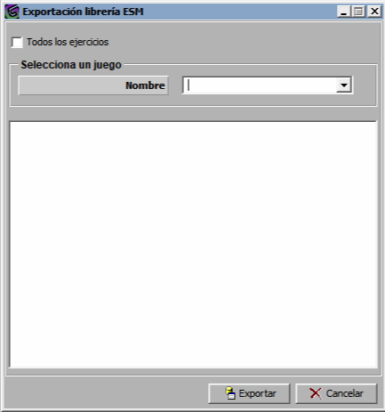

Exportación de Librerías ESM

Mediante este diálogo se permite la generación de una librería genérica de ESM con los Spot Modes de todos los radares incluidos en la base de datos, para todos los ejercicios o para un ejercicio concreto.
Al pulsar exportar se genera un fichero csv con el listado de todos los Spot Modes y sus datos característicos. Durante el proceso de exportación se muestran en la ventana, si los hubiera, los errores y avisos producidos, como se observa en el siguiente ejemplo, en el que aparecen errores por Spot Modes repetidos (que no serán generados por segunda vez), y avisos de radares cuyo número de Spot Modes supera el máximo admitido (99).
El resultado final de la exportación se guarda en un fichero denominado ESMLibrary.csv, en el directorio C:\Galeon\ (modificable por configuración), y su estructura, en sus primeras columnas, es la siguiente:
Este fichero constituye la librería por defecto de la base de datos del Galeón, y contiene muchas más columnas de las que se muestran en la imagen. Por lo que respecta a este manual, las columnas relevantes son las cinco primeras, que indican:
El procedimiento para particularizar la librería es simplemente editar este fichero, realizar los cambios pertinentes y guardarlo, con el nombre apropiado, en el directorio C:\Galeon\ESMLibrary\ (modificable por configuración). El ámbito de aplicación de la librería se puede establecer a tres niveles diferentes, dependiendo del nombre que se ponga al fichero:
Por ejemplo, si en el ejercicio Maniobra1 tenemos las unidades Rayo1 y Rayo2, y en el directorio de las librerías ESM tenemos los ficheros ESMLibrary.csv, Maniobra1.csv y Maniobra1_Rayo1.csv, se utilizarán las siguientes librerías en el ejercicio:
Y en el caso de que el fichero Maniobra1.csv no existiera, se usarían las siguientes:
Un detalle importante que debe de tenerse en cuenta es que dependiendo del uso que se vaya a dar a la librería genérica puede ser conveniente generarla con todos los Spot Modes seleccionados (si se va a usar directamente como librería genérica) o con ninguno (si se va a usar como plantilla para que el alumno seleccione los que quiere incluir en su librería). Esta opción se puede modificar por configuración, y lo puede hacer ADDocean en el momento, a petición de los usuarios.